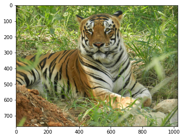
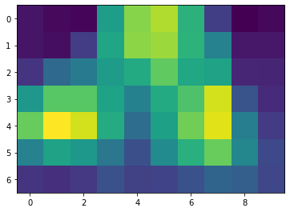
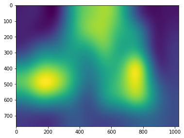
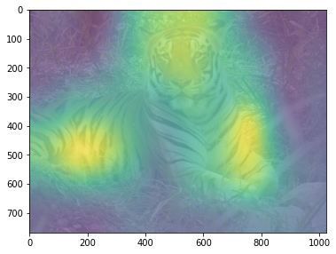
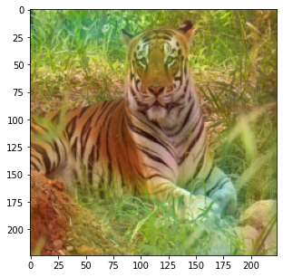
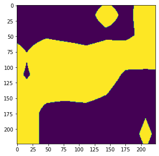

Lecture 3: Explaining CNNs: Class Attribution Map Methods Code
Contents

Lecture 3: Explaining CNNs: Class Attribution Map Methods Code #
#@title
from ipywidgets import widgets
out1 = widgets.Output()
with out1:
from IPython.display import YouTubeVideo
video = YouTubeVideo(id=f"VmbBnSv3otc", width=854, height=480, fs=1, rel=0)
print("Video available at https://youtube.com/watch?v=" + video.id)
display(video)
display(out1)
#@title
from IPython import display as IPyDisplay
IPyDisplay.HTML(
f"""
<div>
<a href= "https://github.com/DL4CV-NPTEL/Deep-Learning-For-Computer-Vision/blob/main/Slides/Week_6/DL4CV_Week06_Part03.pdf" target="_blank">
<img src="https://github.com/DL4CV-NPTEL/Deep-Learning-For-Computer-Vision/blob/main/Data/Slides_Logo.png?raw=1"
alt="button link to Airtable" style="width:200px"></a>
</div>""" )
Imports
from torchvision import models
import torchvision.transforms as transforms
import torch.nn as nn
import torch
from PIL import Image
import matplotlib.pyplot as plt
import cv2
import numpy as np
import requests
from io import BytesIO
from skimage.io import imread
from skimage.transform import resize
import matplotlib as mpl
import matplotlib.pyplot as plt
import warnings
warnings.filterwarnings("ignore", category=FutureWarning)
Class Activation Maps#
# get the model pretrained on Imagenet which is easily available from pytorch
model = models.resnet50(pretrained=True)
# get the reference to the last layer of the convolution
final_conv_layer = model._modules.get('layer4')
/usr/local/lib/python3.7/dist-packages/torchvision/models/_utils.py:209: UserWarning: The parameter 'pretrained' is deprecated since 0.13 and will be removed in 0.15, please use 'weights' instead.
f"The parameter '{pretrained_param}' is deprecated since 0.13 and will be removed in 0.15, "
/usr/local/lib/python3.7/dist-packages/torchvision/models/_utils.py:223: UserWarning: Arguments other than a weight enum or `None` for 'weights' are deprecated since 0.13 and will be removed in 0.15. The current behavior is equivalent to passing `weights=ResNet50_Weights.IMAGENET1K_V1`. You can also use `weights=ResNet50_Weights.DEFAULT` to get the most up-to-date weights.
warnings.warn(msg)
Downloading: "https://download.pytorch.org/models/resnet50-0676ba61.pth" to /root/.cache/torch/hub/checkpoints/resnet50-0676ba61.pth
# This class stores the feature maps of the last convolutional layer of the image, after a forward pass.
class FeatureBuffer():
def __init__(self, m):
self.hook = m.register_forward_hook(self.hook_fn)
def hook_fn(self, module, _input, _output):
self.features = _output
def remove(self):
self.hook.remove()
# Register hook.
fb = FeatureBuffer(final_conv_layer)
# Let's preprocess the data to get the desired results
transform = transforms.Compose([
transforms.Resize(224),
transforms.ToTensor(),
transforms.Normalize(mean=[0.485, 0.456, 0.406], std=[0.229, 0.224, 0.225])
])
# Example picture.
from PIL import Image
plt.figure(figsize=(6, 6))
response = requests.get('https://raw.githubusercontent.com/DL4CV-NPTEL/Deep-Learning-For-Computer-Vision/main/Data/Week_6/tiger.jpg')
img = Image.open(BytesIO(response.content)).convert('RGB')
plt.imshow(img)
plt.show()

# Prepare input, from size [3, 224, 298] to [1, 3, 224, 298]
input_tensor = transform(img).unsqueeze(0)
# Model in evaluation mode.
model = model.eval()
# Get probabilities and feature maps.
out = model(input_tensor)
feature_maps = fb.features
# 1000 classes, and 2028xWxH feature maps ((W,H)depend on image's size after pre-processing).
print("Output's shape: ", out.shape)
print("Feature maps's shape: ", feature_maps.shape)
Output's shape: torch.Size([1, 1000])
Feature maps's shape: torch.Size([1, 2048, 7, 10])
# Get probs from output as torchvision models do not have this final layer.
# If you do not care about the score, then you only need to find the max and ommit this line.
probs = torch.nn.functional.softmax(out[0], dim=0)
# Find out which class image belongs.
score, _class = torch.max(probs, dim=0)
print("Score: ", score.item(), " Class: ", _class.item(), "- Tiger")
Score: 0.8153239488601685 Class: 292 - Tiger
# Get weights and biases for fully conected linear layer.
weights_and_biases = list(model._modules.get('fc').parameters())
print("Weights's shape: ", weights_and_biases[0].shape)
print("Biases's shape: ", weights_and_biases[1].shape)
# Get weights for the class's neuron.
class_weights = weights_and_biases[0][_class]
print("Class weights's shape :", class_weights.shape)
Weights's shape: torch.Size([1000, 2048])
Biases's shape: torch.Size([1000])
Class weights's shape : torch.Size([2048])
# Weights must be reshaped to match feature maps's dimension.
class_weights = class_weights.reshape((-1, 1, 1))
print("Class weights's shape :", class_weights.shape)
# We can also reduce one empty dimension (first one) of the feature maps.
feature_maps = feature_maps.flatten(start_dim=0, end_dim=1)
print("Feature maps's shape: ", feature_maps.shape)
Class weights's shape : torch.Size([2048, 1, 1])
Feature maps's shape: torch.Size([2048, 7, 10])
# Get class_activation maps
class_activation_maps = np.array(torch.sum(feature_maps * class_weights, dim=0).detach(), dtype=np.float32)
plt.figure(figsize=(6, 6))
plt.imshow(class_activation_maps)
plt.show()

"""
There are many types of interpolation, like cv2.INTER_NEAREST, cv2.INTER_LINEAR etc we use cv2.INTER_LANCZ054 to make up for low quality of
the class activation map
"""
# Resize tensor to match original image's size.
resized_cam = cv2.resize(class_activation_maps, dsize=img.size, interpolation=cv2.INTER_LANCZOS4)
plt.figure(figsize=(6, 6))
plt.imshow(resized_cam)
plt.show()

# Visualization of the class activation map, over the original image.
plt.figure(figsize=(6, 6))
plt.imshow(img, alpha=0.4)
plt.imshow(resized_cam, alpha=0.6)
plt.show()

Gradient-weighted CAM#
class GradCamModel(nn.Module):
def __init__(self):
super().__init__()
self.gradients = None
self.tensorhook = []
self.layerhook = []
self.selected_out = None
#PRETRAINED MODEL
self.pretrained = models.resnet50(pretrained=True)
self.layerhook.append(self.pretrained.layer4.register_forward_hook(self.forward_hook()))
for p in self.pretrained.parameters():
p.requires_grad = True
def activations_hook(self,grad):
self.gradients = grad
def get_act_grads(self):
return self.gradients
def forward_hook(self):
def hook(module, inp, out):
self.selected_out = out
self.tensorhook.append(out.register_hook(self.activations_hook))
return hook
def forward(self,x):
out = self.pretrained(x)
return out, self.selected_out
DEVICE = torch.device('cuda:0' if torch.cuda.is_available() else 'cpu')
Defining the model
gcmodel = GradCamModel()
gcmodel = gcmodel.to(DEVICE)
Getting the image
img = imread("https://raw.githubusercontent.com/DL4CV-NPTEL/Deep-Learning-For-Computer-Vision/main/Data/Week_6/tiger.jpg")
img = resize(img, (224,224), preserve_range = True)
img = np.expand_dims(img.transpose((2,0,1)),0)
img /= 255.0
mean = np.array([0.485, 0.456, 0.406]).reshape((1,3,1,1))
std = np.array([0.229, 0.224, 0.225]).reshape((1,3,1,1))
img = (img - mean)/std
inpimg = torch.from_numpy(img).to("cuda:0", torch.float32)
out, acts = gcmodel(inpimg)
acts = acts.detach().cpu()
loss = nn.CrossEntropyLoss()(out,torch.from_numpy(np.array([600])).to("cuda:0"))
loss.backward()
grads = gcmodel.get_act_grads().detach().cpu()
pooled_grads = torch.mean(grads, dim=[0,2,3]).detach().cpu()
for i in range(acts.shape[1]):
acts[:,i,:,:] += pooled_grads[i]
heatmap_j = torch.mean(acts, dim = 1).squeeze()
heatmap_j_max = heatmap_j.max(axis = 0)[0]
heatmap_j /= heatmap_j_max
heatmap_j = resize(heatmap_j,(224,224),preserve_range=True)
#For colour
cmap = mpl.cm.get_cmap("jet",256)
heatmap_j2 = cmap(heatmap_j,alpha = 0.2)
#PLotting
fig, axs = plt.subplots(1,figsize = (5,5))
axs.imshow((img*std+mean)[0].transpose(1,2,0))
axs.imshow(heatmap_j2)
plt.show()

Other type of visualization
heatmap_j3 = (heatmap_j > 0.75)
fig, axs = plt.subplots(1,figsize = (5,5))
axs.imshow(((img*std+mean)[0].transpose(1,2,0)))
axs.imshow(heatmap_j3)
plt.show()

References
http://cnnlocalization.csail.mit.edu/ : some results by the authors.
https://github.com/zhoubolei/CAM : official code for CAM.
https://github.com/ramprs/grad-cam